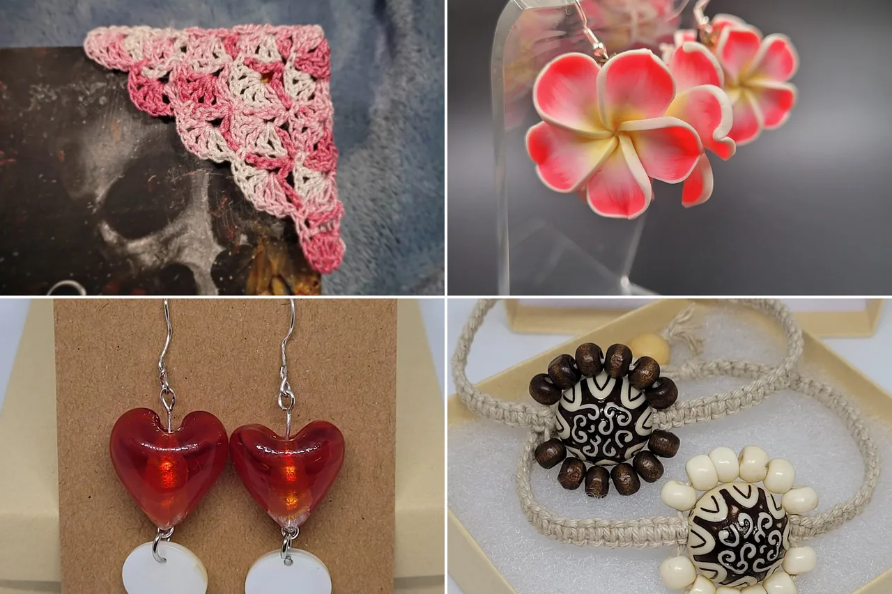
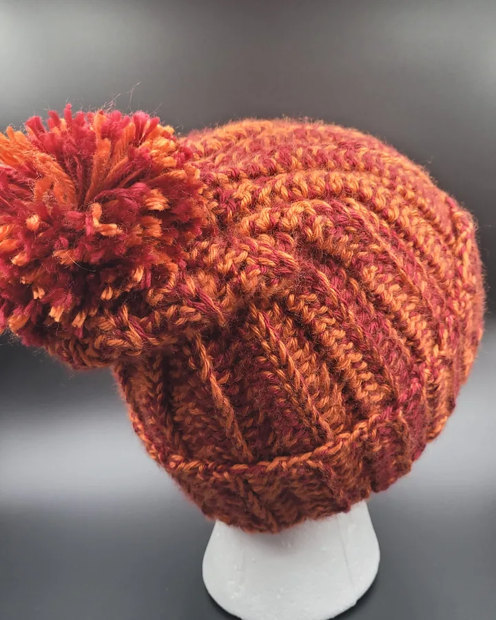
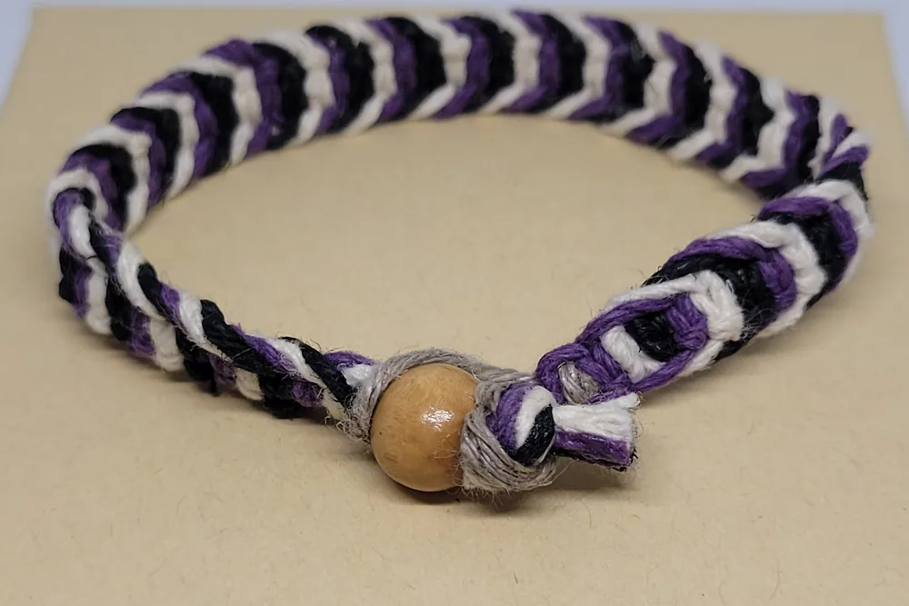
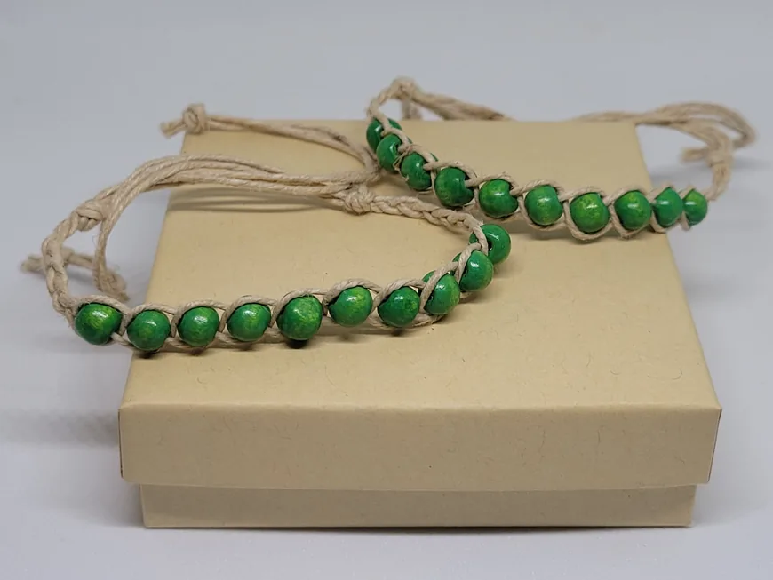
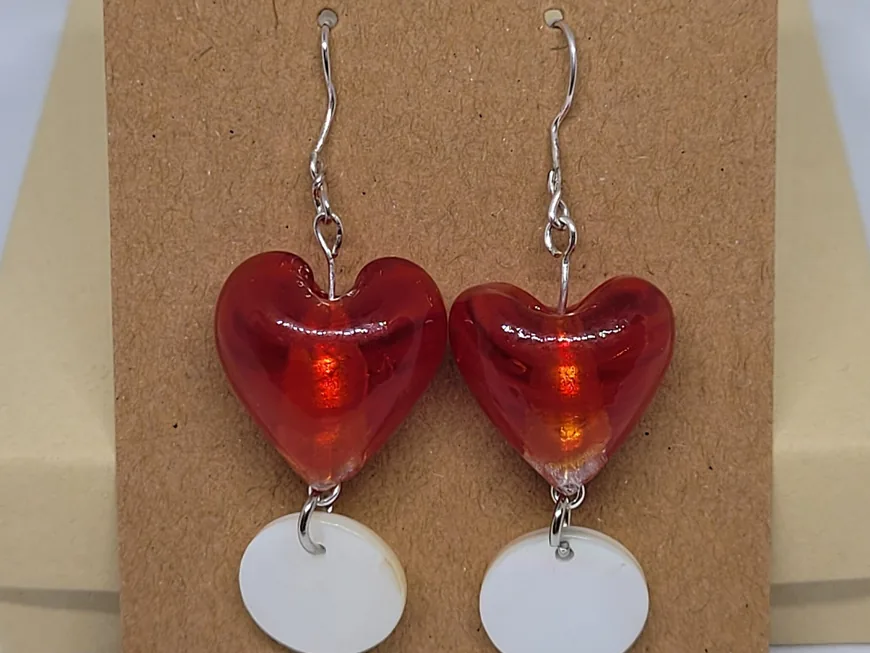
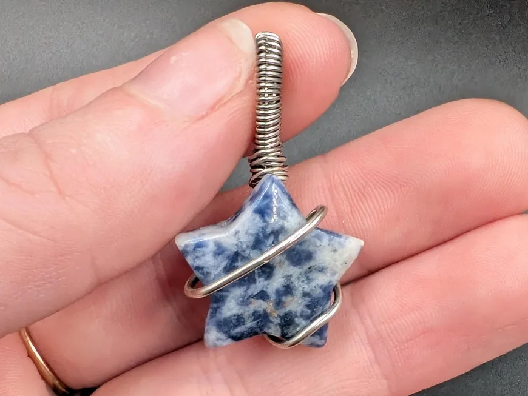
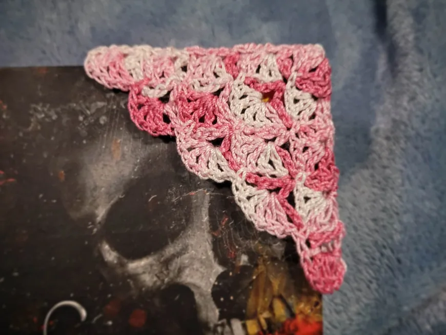

Upcycled
Materials given a second life.

Maker · Ridgefield, Washington
Reduce, reuse, upcycle. Unique handmade gifts.
Meet the Artist
Owner & artist of 2econd Stitch Studio
Handmade, sustainable and unique gifts created by me. My name is Kayla and I am passionate about creating while being sustainable.
Unique handmade gifts, crafted with upcycled and thrifted materials.
Our story

01 How it started
My Dad taught me how to crochet when I was really young. I think that’s where my crafting really started. In high school, I picked up crocheting again as a way to feel closer to my Dad, who had recently passed away. I taught myself all the steps past the basics, and decided I would teach myself every craft that had ever interested me.
I love hemp jewelry. I’m a nature child, and I love the earthy feel it gives. I try to stick to the eco-friendly side of things, because it’s very important to me.
Born and raised in Vancouver, WA, I had a little girl in 2012 and found time to turn my crafting into a way to help support her. She is my world! I love creating things that others can enjoy.
— Kayla
02 Where & how it’s made
All of my pieces are made using exclusively repurposed, upcycled, secondhand or small business supplied materials, in an effort to reduce my shop’s footprint. I’m always trying new things and new crafts, so the shop keeps changing.

03 What makes it special
Materials given a second life.
Once it sells, it’s likely gone.
A smaller footprint, every piece.
Reviews
What we make
Hemp jewelry, earrings, wire-wrapped pendants and crochet goods. Here is what you will find in the shop.

Earthy hemp bracelets, chokers and anklets with stones, beads and pendants.

Hearts, flowers, bugs and quirky charms, often made from repurposed beads and findings.

Crystal and stone pendants wrapped by hand, from sodalite stars to tiger’s eye.

Lace corner bookmarks, hair bandanas and cozy hats, crocheted by hand.
Everything is sold through the online shop, with secure checkout and buyer protection.
Stay in the loop
Sign up to be the first to know about sales and new products.
You’re in! 🎉
Continue to the shopUpcycled handmade gifts from Ridgefield, Washington. Follow along on Instagram for works in progress!
Visit the shop